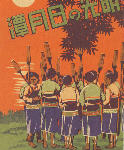

呂清夫 撰文

有人說，日月潭的湖光山色絕不輸給西湖，它只差的是人文的建設。不過我想好在沒有太多的「建設」，因為從現有的建設—玄奘寺看來，實在令人覺得一「動」不如一「靜」，因為玄奘寺建得太過粗糙了，不但做工馬虎，而且顏色惡俗，寺中除了「舍利子」之外，幾乎是空空盪盪的，繞到後門一看，更是單調異常，加倍粗糙。怎麼說也配不上山水的秀麗及玄奘的崇高。像玄奘寺般的寺廟在全省隨處可見，不管寺中供奉何方神聖，只要新建的或修建的工程，總覺不夠用心，即以龍柱、石獅而言，往往刻得很淺，似乎只要略具形式，工人便想罷手，這時為著掩飾其淺刻即止，常在雕刻上面描上黑線，以示凹下：描上白線，以示凸起。這與古廟雕刻的細緻比起來，簡直不可同日而語。一個朋友告訴我，他從前看到的三峽祖師廟真是巧奪天工，因為廟中的龍柱細部竟把而頭刻得細如「香腳」（香插入香爐中的部分），這使得三峽的人不時引以為傲。不過，新建的寺廟更令人難過的恐怕還在於它的顏色。常我們站住一座寺廟之前，最先映入眼簾的應是屋頂上的裝飾，那上面可能有三官大帝、或福祿壽三神，或七寶塔，或龍鳳、花鳥、八仙、走獸……之類的可愛東西。在古廟來說，這些東西都與整個寺廟融成一體，但在新廟來說，這些卻是非常刺眼，我常尋思這些東西何以令人刺眼離耐，原來它們是用彩色玻璃片剪貼而成，於是到處血紅豔綠，到隨閃著螢光，令人眼睛張不開。同時因是玻璃片，所以顯得十分「薄板」，猛然一看，有如蠟光紙剪貼而成。然在古廟而言，屋頂裝飾則以碗片或瓷片剪貼而成，由於瓷器比較厚重，而且不太亮，所以作成的人物鳥獸，便顯得比較厚重，有如雕塑一般，加上碗片本身有曲面，所以更覺立體。又由於所用顏色是利用現成碗片上的釉彩拼湊而成，有點類似郵票剪貼而成的圖畫，所以顏色倍覺豐富而渾厚。不知今人何以不用古法做工，難道是瓷片較厚難以施工，於是一切從簡？抑或只有刺眼的色澤才能吸引今人的感官？其實，新廟的顏色問題還不只是屋頂而已，那種血紅的柱子等物也是令人不安的，何況血紅色也出現於寺廟以外的節慶牌樓、仿古建築、乃至塑膠產品上，當它們混入本已擁擠的都巿空間時，更加令人感到生活的焦躁。我很懷疑，那種血紅色是否就是傳統的紅色，我想可能為了施工省事，為了懶得調色，所以直接使用原色去粉刷，這樣才會出現那種血紅色。但在古書所看到的柱子則是丹色的，例如「楹，天子丹」、「青瑣丹楹」、「柱頭刷丹」等是，這些丹色應該不是今人常用的刺眼的血紅色，加之，傳統色料常混有雜質，而經年累月風吹日曬之後，更要發黑，所以傳統的紅色應該比較沈著、穩重，不會是火辣辣的。我們只要看看大陸、日本、韓國使用古法漆成的紅色，應可證明這一點。本來，住過去的農業社會中，在綠油油的鄉間，如果來點傳統的紅色，真的可以增加喜氣，但在今日都市的水泥叢林之中，使用傳統的紅色已經有點勉強，你想想看，哪天你如果把住家或辦公大樓的柱子都漆成紅色時，將會成個什麼模樣?所以新建廟宇、仿古建築、節慶牌樓如果進一步使用血紅豔綠，應該是與周圍環境格格不入的，應該是會令人焦躁不安的，只因我們的習焉不察，所以或許已經麻木。此事乍看無關國民生計，但是我們只要看看國產的塑膠產品，不論文具餐具、臉盆垃圾桶，若與舶來品相比，便知它的缺乏競爭力了。考其原因，不外只因造形色彩差人一截，物質材料無差別。至於我們如果有心發展無煙囪的工業，那麼，當外國人看我們的環境有如我們的塑膠產品時，那還能近悅遠來嗎？所以，日月潭的秀麗需要配上祖師廟的精緻，或許才有西湖的風采。
原載1989.5.31.自立早報，收入1994年，呂清夫著「現代都市叢林派」